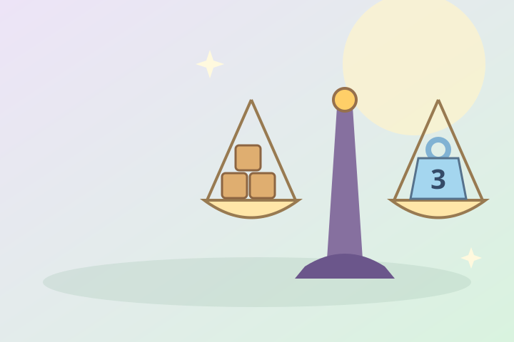

Терези Мімі
Допоможи Мімі врівноважити шальки!
Полічи кубики та добери гирю.
Число на гирі показує, скільки кубиків вона важить.

2 рівні · 16 завдань · без поспіху
Перший рівень пройдено!
Тепер на правій шальці вже є гиря.
Допоможи Мімі добрати ще одну.
Чудова рівновага!
Мімі дякує тобі за допомогу.
Звук не запустився. Спробуй «Послухати» або грай за текстовими підказками.